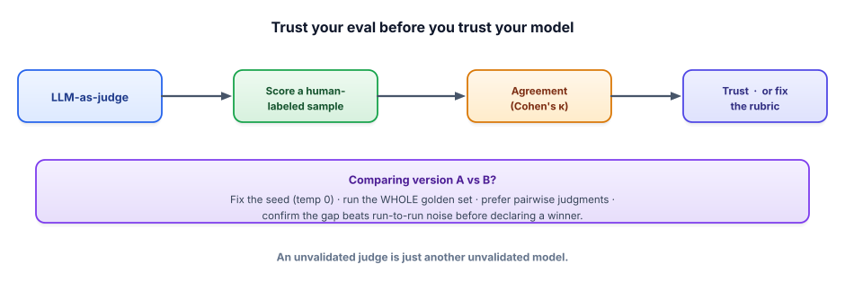

Advanced evals
Track 6 made you measure. This lesson makes your measurements trustworthy — calibrating LLM judges, cancelling their biases, and using enough statistical care that “v2 is better” is a fact, not a hopeful glance at a number that ticked up.
Why your eval needs its own eval
An LLM-as-judge is itself a model, with all the unreliability that implies — so an unvalidated judge is just another unvalidated model, and trusting it blindly means you’re measuring your system with a ruler of unknown length. Worse, judges have systematic biases: they tend to favor the first answer shown (position bias), longer answers (verbosity bias), and outputs from models like themselves (self-preference). If you don’t account for these, you’ll confidently ship changes that the judge liked for the wrong reasons. Advanced evaluation is the discipline of making the measurement itself rigorous before you let it drive decisions.

1 · Calibrate the judge against humans
Before an LLM judge grades thousands of outputs, prove it agrees with people on a sample you label by hand. Take 30–50 examples, score them yourself (or with a teammate), have the judge score the same ones, and measure agreement — ideally Cohen’s κ (kappa), which corrects for agreement that would happen by chance. High agreement means you can trust the judge to scale your labels; low agreement means your rubric is ambiguous or the judge is biased, and you fix that before proceeding. This calibration step is what converts “the judge said 8/10” into a number you can stand behind.
2 · Cancel the biases you can predict
Two cheap techniques remove most judge bias. For comparisons, use position swapping: judge each pair twice, A-then-B and B-then-A, and average — if a model only wins in one order, that’s position bias, not quality. Prefer pairwise judgments (“which answer is better?”) over absolute scores, because relative judgments are more stable and consistent than a model’s shaky sense of “7 vs 8 out of 10.” And control for verbosity by telling the judge to ignore length and reward correctness, or by capping answer length in the comparison.
def which_is_better(question, answer_a, answer_b):
# Judge both orders to cancel position bias, then combine.
first = judge(question, answer_a, answer_b) # returns "A" or "B"
second = judge(question, answer_b, answer_a) # swapped order
if first == "A" and second == "B": # both agree A is better
return "A"
if first == "B" and second == "A": # both agree B is better
return "B"
return "tie" # disagreement = position bias, call it a tie3 · Respect the noise
LLM outputs vary run to run, so a small score difference can be pure randomness. Before declaring a winner, take three precautions. Reduce noise where you can: fix the seed and use temperature 0 for eval runs so results are reproducible. Use enough examples: a 2-point move on 50 questions is one or two answers flipping — well within noise — whereas the same gap over 500 questions is far more credible. And quantify uncertainty: report a confidence interval or run a simple significance check, and only call a change a win when the gap clearly exceeds run-to-run variation. “The number went up” is the beginning of an investigation, not the end of one.
- An unvalidated judge is an unvalidated model — calibrate it against human labels (Cohen’s κ) before trusting it at scale.
- Judges have systematic biases (position, verbosity, self-preference); design around them.
- Swap positions and average, and prefer pairwise over absolute scores, to get stable comparisons.
- Respect run-to-run noise: fix the seed/temp 0, use enough examples, and check the gap beats variation before declaring a winner.
- Rigor in the measurement is what lets evals safely drive decisions.
A teammate says: “v2 of our prompt scored 82% vs v1’s 80% on our 50-question set — let’s ship v2.” Is that conclusion safe? What would you do before shipping?
▸ Show solution & reasoning
Is it safe? No — not yet. A 2-point difference on 50 questions is just one answer changing (1/50 = 2%). That’s easily within run-to-run noise, especially if the eval wasn’t run at temperature 0, and it could even be judge variance rather than a real quality change. Shipping on this is exactly the trap this lesson warns about.
What I’d do: (1) re-run both versions at temperature 0 with a fixed seed to remove sampling noise, ideally a few times to see the spread. (2) Expand the set — 50 is small; move toward a few hundred representative questions so a 2-point gap means something. (3) Use a pairwise judge with position-swapping (“is v2’s answer better than v1’s for this question?”) rather than comparing two absolute percentages. (4) Look at which questions changed — did v2 fix a real failure mode or just reshuffle? (5) Only call it a win if the gap clearly survives all of that. If it doesn’t, v1 and v2 are effectively tied and the decision should rest on other factors (cost, latency, simplicity).
Why this matters: teams that ship on noise spend their lives chasing phantom improvements and regressions. Insisting that a “win” beat the noise floor is what makes your eval a reliable decision-making instrument instead of a slot machine.
Your LLM judge tends to prefer whichever answer it sees first. What’s the most effective fix for fair A/B comparisons?
Here’s the strategic reason this track ends on evals rather than a flashier topic: in applied GenAI, the evaluation harness is often a more durable advantage than any prompt, model, or framework. Models change every few months and prompts are easily copied, but a rich, domain-specific golden set — built from your real users’ questions and your real production failures — encodes hard-won knowledge that competitors can’t clone. Teams that can reliably tell whether a change is better can adopt new models the day they launch, safely, while teams flying blind are stuck guessing. The eval is what lets you move fast without breaking things.
That turns into a flywheel. Every production failure becomes a new test case, so the system literally can’t regress the same way twice; the golden set grows richer with use; and evaluation graduates from a one-time check into eval-driven development — wired into CI so no prompt or model change ships without passing, exactly like unit tests guard normal software. The cost to watch is the judges themselves (running an LLM over a large set isn’t free), so you balance set size, judge model, and frequency — yet another measurable trade-off. Internalize this and you’ll be the engineer who makes a team’s AI trustworthy, which is precisely the person worth hiring.
That’s the whole journey — from “what is a token?” to calibrating an LLM judge. You can open the box, feed a model knowledge, let it act, make it trustworthy, fast, and cheap, prove it with built-and-measured projects, and present yourself for the role. The only thing left isn’t reading — it’s reps: build the capstones (Track 10), run your study plan (11.1), and start applying. You’re ready. Go build something real.